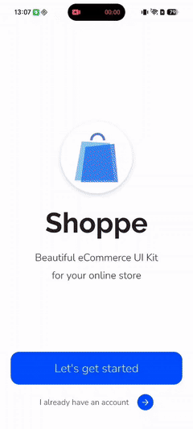
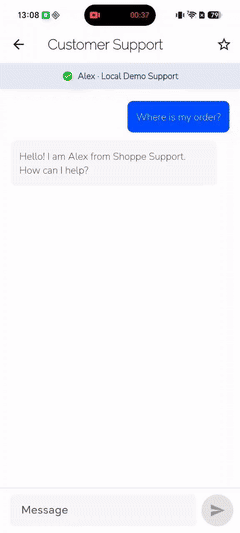
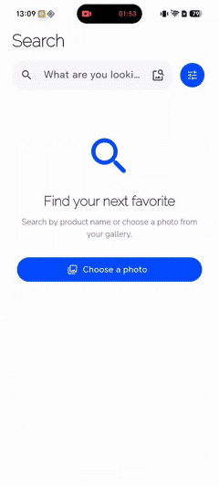

01 / Why it exists
Code generation is only one part of delivery.
AI can produce a page, an API client, or a test quickly. Production quality still depends on where that code is allowed to live, which contracts it must preserve, what evidence proves it works, and who independently reviews the result.
Without a Harness
Project knowledge lives in chat history and individual memory. The Agent can generate code, but package boundaries, test scope, native parity, and completion criteria remain implicit.
With a Harness
Durable contracts live beside the code. Tasks carry executable scope, roles stay narrow, checks produce evidence, and review findings feed the implementation loop before archival.
02 / System model
One contract, multiple execution surfaces.
The repository is Claude-first. Claude Commands, Agents, Skills,
and Memories under .claude/ are the source of truth.
Codex-native Skills and custom Agents are generated from those same
assets and checked for drift.
Codex adaptation
AGENTS.md, .agents/skills/, and
.codex/agents/ provide native discovery without
becoming a second contract.
Architecture, package direction, native rules, safety policy.
Task cards, Figma context, focused Skills, app documentation.
Specialized Agents implement, test, review, and operate the app.
Checks, reports, sanitized logs, and archived decisions.
apps/demo -> app_features, app_data, app_im, app_core, app_ui
app_features -> app_data, app_im, app_core, app_ui
app_data / app_im -> app_core
app_core / app_ui -> no other workspace packages03 / Specialized roles
Narrow roles create independent judgment.
A role is not a decorative persona. Each Agent has an explicit responsibility, tool surface, stopping condition, and output contract. Reviewers do not share the executor's assumptions.
Architect
Turns product, design, and repository evidence into executable tasks.
Task Executor
Implements one approved task with focused tests and validation.
Bridge Engineer
Owns contract-first MethodChannel and EventChannel work across hosts.
Reviewer
Checks behavior, architecture, lifecycle, contracts, and test gaps.
Security Reviewer
Traces trust boundaries, sensitive data, untrusted input, and capabilities.
App Operator
Runs an approved UI behavior Spec against a Debug app through Marionette.
04 / Delivery loop
Artifacts move with the work, not around it.
The normal loop is intentionally compact. Human review is reserved for decisions and high-risk boundaries; Agents run focused checks and independent reviews as part of execution.
Normalize input
Read product rules, repository contracts, and Figma nodes. Record uncertainty instead of inventing behavior.
Plan tasks
Create uniquely named task cards with dependency order, executor, implementation scope, tests, and conditional security review.
Implement and verify
Change the smallest valid surface, write tests in the same batch, and capture sanitized command evidence once.
Review independently
The general Reviewer always checks correctness. Security Review joins only when the task or actual diff changes a trust boundary.
Fix and re-review
P0 and P1 findings block completion. Fixes return to the originating Reviewer, and cross-cutting fixes trigger both review dimensions.
Archive evidence
Completed tasks move to docs/tasks/done/ only after
checks, reports, dependencies, and required digests are valid.
05 / Security review
Security is conditional, independent, and evidence-bound.
Low-risk UI and documentation work does not gain another gate. Security Review activates when a task changes trust, data, native, supply-chain, or Agent capability boundaries.
- Authentication, sessions, authorization, or user isolation
- Credentials, private data, logs, or secure storage
- Network, files, Deep Links, WebViews, or untrusted deserialization
- Platform channels, native permissions, or host configuration
- Dependencies, Actions, build scripts, or generated toolchains
- Agent tools, MCP access, CI permissions, commit, or release capability
Two review modes
A task-gating report lists reviewed repository files and stores an implementation digest. Any later file change invalidates that report. A standalone review can inspect supplied code without a file binding, but it cannot satisfy task archival.
Deterministic controls
Schema checks reject invalid task metadata, missing reports, stale digests, unsafe reviewer tools, and drifted Codex adapters.
Agentic judgment
The Reviewer must show the attacker-controlled entry, affected asset, path to a dangerous operation, concrete evidence, and a fix.
06 / Reference Demo
The repository contains evidence, not a placeholder.
The Shoppe-inspired Flutter Demo exercises authentication, catalog, search, product, cart, checkout, profile, settings, rewards, orders, and support flows with deterministic local data.



Development record: the Demo implementation completed in one overnight run without human intervention during execution. Human input selected the design, set scope, and handled environment access.
07 / Adoption paths
Reuse the pattern, not necessarily the directory tree.
This repository is intentionally adaptable. The goal is to preserve explicit contracts and feedback loops while allowing the host project to keep its own stack, package boundaries, CI, and team conventions.
Run the reference
Clone the repository, run the Demo, inspect its task history and gates, and use it as a working example of the complete model.
Adapt an existing project
Ask an Agent to compare this Harness with the target repository, identify conflicts, and produce an adaptation plan before copying selected contracts, roles, commands, skills, and checks.
Own the result
Once adapted, the target repository's contract becomes authoritative. Future upstream changes are inputs to evaluate, not dependency updates that must be applied mechanically.
Adaptation checklist
- Map package and feature boundaries
- Identify native host responsibilities
- Choose the authoritative Agent source
- Separate generated adapters from facts
- Keep only roles with real consumers
- Convert critical rules into checks
- Define evidence and archival paths
- Preserve human control at external boundaries
08 / Boundaries
What the Harness deliberately does not promise.
Clear non-goals prevent a reference architecture from turning into a universal framework that carries unnecessary complexity.
It does not add AI features to a Flutter app.
The Harness operates on the engineering repository and workflow.
It is not consumed through a dependency version.
Teams inspect, extract, and adapt the pattern to their own project.
Agents do not invent missing product decisions.
Ambiguity that changes behavior is surfaced for a human decision.
UI operation remains independently scheduled.
App Operator reports do not silently become normal task gates.
Static checks do not replace native builds.
Android and iOS hosts remain explicit build and contract targets.
09 / Source documents
Continue with the repository facts.
This page explains the model for people. The linked repository files remain the precise source for Agent behavior and engineering rules.